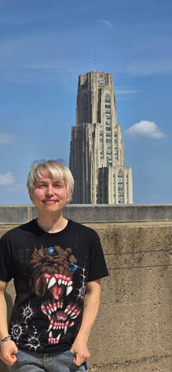
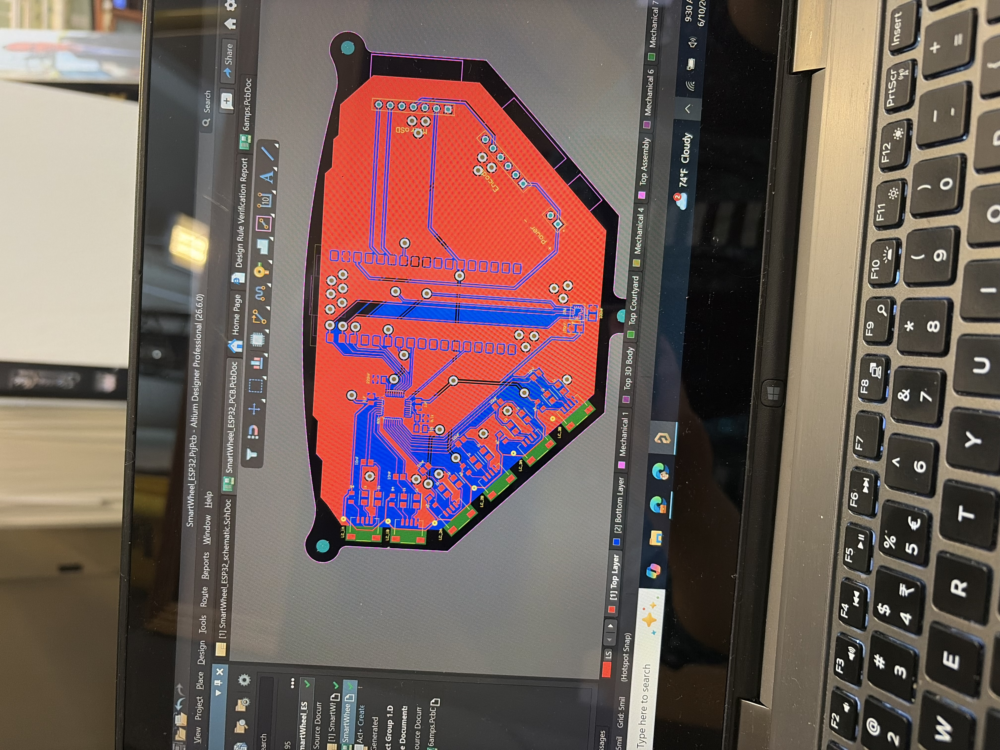
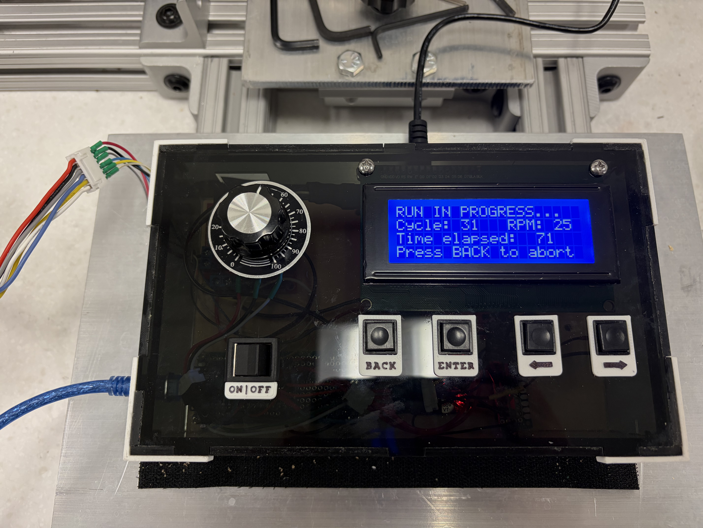
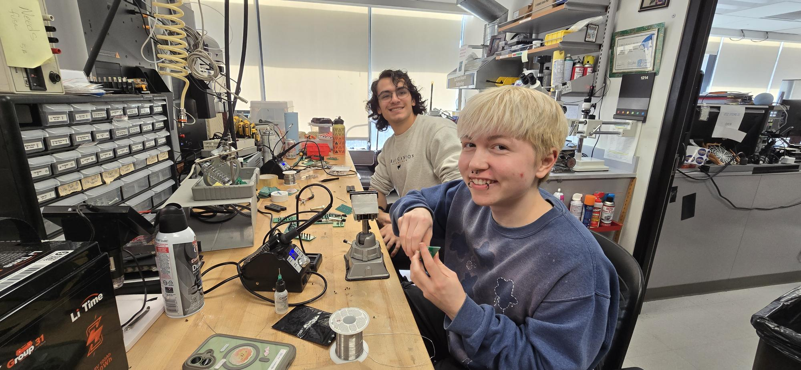
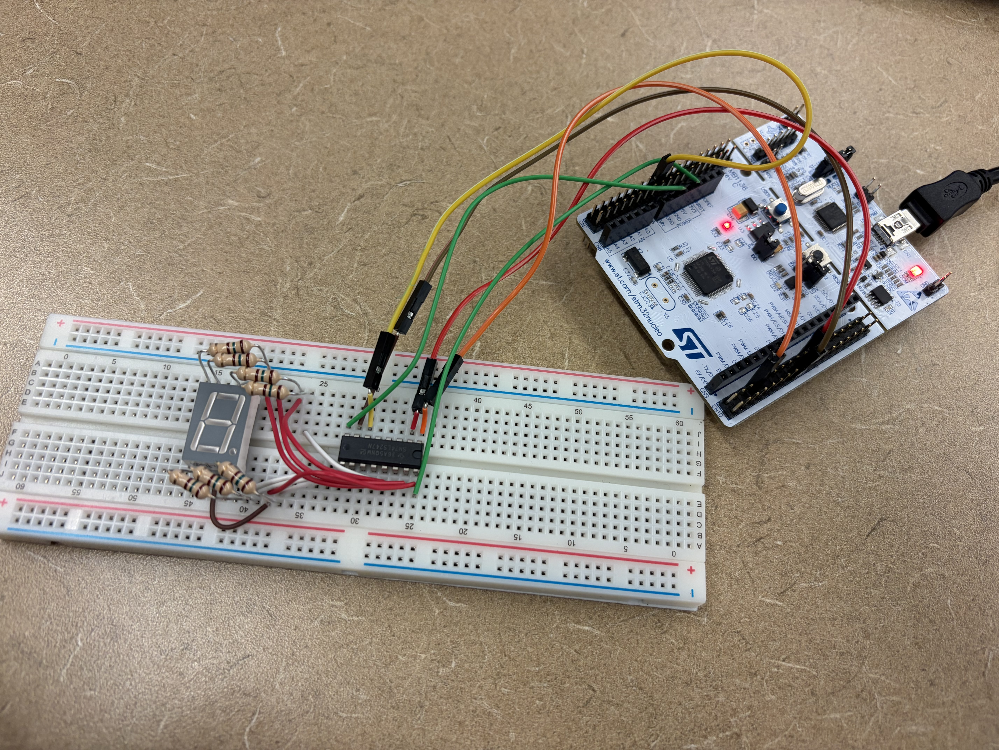

Alexander Sasha Roth
Engineer · Artist · Student
Hey there, my name is Sasha! I'm a student at the University of Pittsburgh studying Electrical and Computer Engineering. I love designing creative robotics projects that bring together artistry, engineering, and programming. I also enjoy drawing, painting, and creating digital art. This website is a collection of my work and projects, so feel free to explore!

Research & Internship
Electronics
Leadership
Academics Art
Art